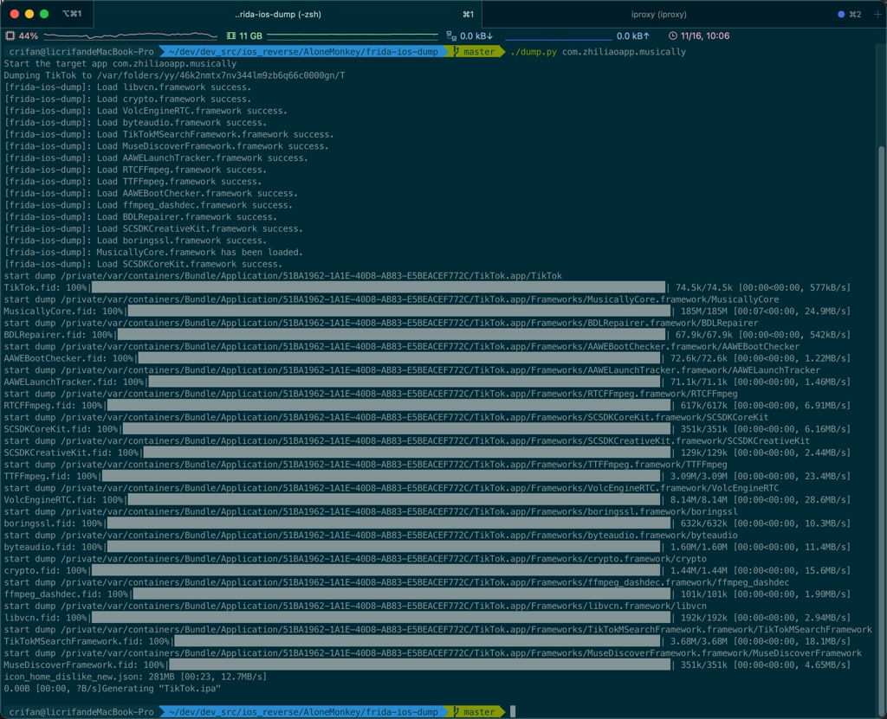
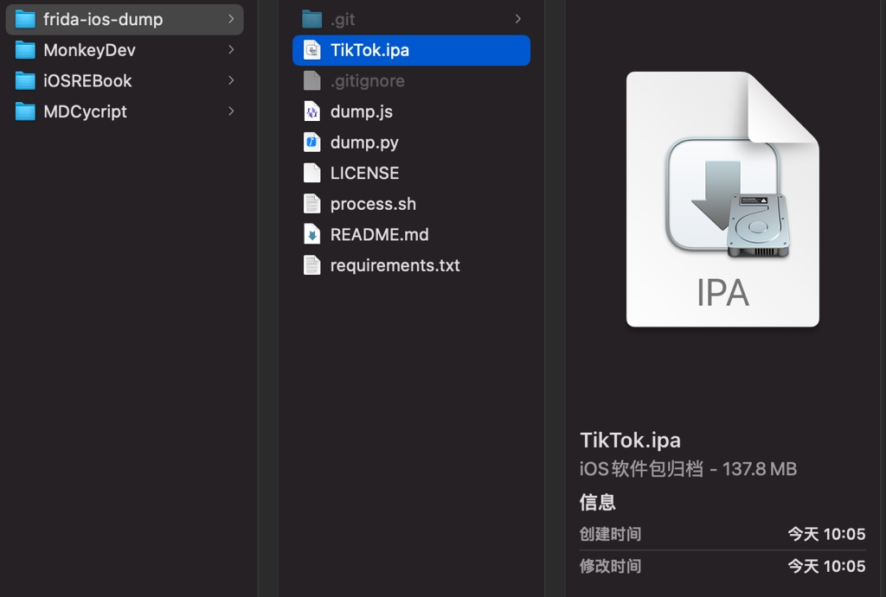

TikTok的ipa
给TikTok砸壳出ipa：
概述
./dump.py com.zhiliaoapp.musically详解：
前提
- 前提：越狱iPhone中已安装
TikTok- 注：通过境外比如美区
AppleID登录后的AppStore中才能搜索和下载TikTok
- 注：通过境外比如美区
砸壳ipa的步骤
（1）先确认app包名
ideviceinstaller -l -o list_user
输出能看到：
com.zhiliaoapp.musically, "268010", "TikTok"
得到TikTok包名是：com.zhiliaoapp.musically
（2）确保Mac中当前Python中已安装frida（以及相关的库）
如果没有装，要去安装：
pip install frida paramiko scp tqdm
（3）另外新建一个终端，开启端口映射
新建一个终端窗口（或Tab），去运行端口映射
iproxy 2222 22
（4）确保frida版本一致：Mac中和iPhone中frida版本是一样的
说明：
- 如何查看frida版本
- iPhone
frida-server --version - Mac
pip show frida
- iPhone
- 如果frida版本不一致
- 后续会报错：
Failed to enumerate applications unable to communicate with remote frida-serverFailed to enumerate applications: unable to communicate with remote frida-server; please ensure that major versions match and that the remote Frida has the feature you are trying to use
- 需要去确保一致
- 举例：
- 此处frida版本：
- Mac：
16.0.2 - iPhone：
15.1.27
- Mac：
- 如何解决
- 去iPhone中
Cydia中升级frida到最新版16.0.2
- 去iPhone中
- 此处frida版本：
- 举例：
- 后续会报错：
（5）确保被砸壳的app已退出，没在运行
可选？ iPhone中被砸壳的app，已退出，不要已启动真正运行
（6）真正开始砸壳
- 概述
./dump.py com.zhiliaoapp.musically - 详解
crifan@licrifandeMacBook-Pro ~/dev/dev_src/ios_reverse/AloneMonkey/frida-ios-dump master ./dump.py com.zhiliaoapp.musically
Start the target app com.zhiliaoapp.musically
Dumping TikTok to /var/folders/yy/46k2nmtx7nv344lm9zb6q66c0000gn/T
[frida-ios-dump]: Load libvcn.framework success.
[frida-ios-dump]: Load crypto.framework success.
[frida-ios-dump]: Load VolcEngineRTC.framework success.
[frida-ios-dump]: Load byteaudio.framework success.
[frida-ios-dump]: Load TikTokMSearchFramework.framework success.
[frida-ios-dump]: Load MuseDiscoverFramework.framework success.
[frida-ios-dump]: Load AAWELaunchTracker.framework success.
[frida-ios-dump]: Load RTCFFmpeg.framework success.
[frida-ios-dump]: Load TTFFmpeg.framework success.
[frida-ios-dump]: Load AAWEBootChecker.framework success.
[frida-ios-dump]: Load ffmpeg_dashdec.framework success.
[frida-ios-dump]: Load BDLRepairer.framework success.
[frida-ios-dump]: Load SCSDKCreativeKit.framework success.
[frida-ios-dump]: Load boringssl.framework success.
[frida-ios-dump]: MusicallyCore.framework has been loaded.
[frida-ios-dump]: Load SCSDKCoreKit.framework success.
start dump /private/var/containers/Bundle/Application/51BA1962-1A1E-40D8-AB83-E5BEACEF772C/TikTok.app/TikTok
TikTok.fid: 100%|███████████████████████████████████████████████████████████████████████████████████████████████████████████████| 74.5k/74.5k [00:00<00:00, 577kB/s]
start dump /private/var/containers/Bundle/Application/51BA1962-1A1E-40D8-AB83-E5BEACEF772C/TikTok.app/Frameworks/MusicallyCore.framework/MusicallyCore
MusicallyCore.fid: 100%|█████████████████████████████████████████████████████████████████████████████████████████████████████████| 185M/185M [00:07<00:00, 24.9MB/s]
start dump /private/var/containers/Bundle/Application/51BA1962-1A1E-40D8-AB83-E5BEACEF772C/TikTok.app/Frameworks/BDLRepairer.framework/BDLRepairer
BDLRepairer.fid: 100%|██████████████████████████████████████████████████████████████████████████████████████████████████████████| 67.9k/67.9k [00:00<00:00, 542kB/s]
start dump /private/var/containers/Bundle/Application/51BA1962-1A1E-40D8-AB83-E5BEACEF772C/TikTok.app/Frameworks/AAWEBootChecker.framework/AAWEBootChecker
AAWEBootChecker.fid: 100%|█████████████████████████████████████████████████████████████████████████████████████████████████████| 72.6k/72.6k [00:00<00:00, 1.22MB/s]
start dump /private/var/containers/Bundle/Application/51BA1962-1A1E-40D8-AB83-E5BEACEF772C/TikTok.app/Frameworks/AAWELaunchTracker.framework/AAWELaunchTracker
AAWELaunchTracker.fid: 100%|███████████████████████████████████████████████████████████████████████████████████████████████████| 71.1k/71.1k [00:00<00:00, 1.46MB/s]
start dump /private/var/containers/Bundle/Application/51BA1962-1A1E-40D8-AB83-E5BEACEF772C/TikTok.app/Frameworks/RTCFFmpeg.framework/RTCFFmpeg
RTCFFmpeg.fid: 100%|█████████████████████████████████████████████████████████████████████████████████████████████████████████████| 617k/617k [00:00<00:00, 6.91MB/s]
start dump /private/var/containers/Bundle/Application/51BA1962-1A1E-40D8-AB83-E5BEACEF772C/TikTok.app/Frameworks/SCSDKCoreKit.framework/SCSDKCoreKit
SCSDKCoreKit.fid: 100%|██████████████████████████████████████████████████████████████████████████████████████████████████████████| 351k/351k [00:00<00:00, 6.16MB/s]
start dump /private/var/containers/Bundle/Application/51BA1962-1A1E-40D8-AB83-E5BEACEF772C/TikTok.app/Frameworks/SCSDKCreativeKit.framework/SCSDKCreativeKit
SCSDKCreativeKit.fid: 100%|██████████████████████████████████████████████████████████████████████████████████████████████████████| 129k/129k [00:00<00:00, 2.44MB/s]
start dump /private/var/containers/Bundle/Application/51BA1962-1A1E-40D8-AB83-E5BEACEF772C/TikTok.app/Frameworks/TTFFmpeg.framework/TTFFmpeg
TTFFmpeg.fid: 100%|████████████████████████████████████████████████████████████████████████████████████████████████████████████| 3.09M/3.09M [00:00<00:00, 23.4MB/s]
start dump /private/var/containers/Bundle/Application/51BA1962-1A1E-40D8-AB83-E5BEACEF772C/TikTok.app/Frameworks/VolcEngineRTC.framework/VolcEngineRTC
VolcEngineRTC.fid: 100%|███████████████████████████████████████████████████████████████████████████████████████████████████████| 8.14M/8.14M [00:00<00:00, 28.6MB/s]
start dump /private/var/containers/Bundle/Application/51BA1962-1A1E-40D8-AB83-E5BEACEF772C/TikTok.app/Frameworks/boringssl.framework/boringssl
boringssl.fid: 100%|█████████████████████████████████████████████████████████████████████████████████████████████████████████████| 632k/632k [00:00<00:00, 10.3MB/s]
start dump /private/var/containers/Bundle/Application/51BA1962-1A1E-40D8-AB83-E5BEACEF772C/TikTok.app/Frameworks/byteaudio.framework/byteaudio
byteaudio.fid: 100%|███████████████████████████████████████████████████████████████████████████████████████████████████████████| 1.60M/1.60M [00:00<00:00, 11.4MB/s]
start dump /private/var/containers/Bundle/Application/51BA1962-1A1E-40D8-AB83-E5BEACEF772C/TikTok.app/Frameworks/crypto.framework/crypto
crypto.fid: 100%|██████████████████████████████████████████████████████████████████████████████████████████████████████████████| 1.44M/1.44M [00:00<00:00, 15.6MB/s]
start dump /private/var/containers/Bundle/Application/51BA1962-1A1E-40D8-AB83-E5BEACEF772C/TikTok.app/Frameworks/ffmpeg_dashdec.framework/ffmpeg_dashdec
ffmpeg_dashdec.fid: 100%|████████████████████████████████████████████████████████████████████████████████████████████████████████| 101k/101k [00:00<00:00, 1.90MB/s]
start dump /private/var/containers/Bundle/Application/51BA1962-1A1E-40D8-AB83-E5BEACEF772C/TikTok.app/Frameworks/libvcn.framework/libvcn
libvcn.fid: 100%|████████████████████████████████████████████████████████████████████████████████████████████████████████████████| 192k/192k [00:00<00:00, 2.94MB/s]
start dump /private/var/containers/Bundle/Application/51BA1962-1A1E-40D8-AB83-E5BEACEF772C/TikTok.app/Frameworks/TikTokMSearchFramework.framework/TikTokMSearchFramework
TikTokMSearchFramework.fid: 100%|██████████████████████████████████████████████████████████████████████████████████████████████| 3.68M/3.68M [00:00<00:00, 18.1MB/s]
start dump /private/var/containers/Bundle/Application/51BA1962-1A1E-40D8-AB83-E5BEACEF772C/TikTok.app/Frameworks/MuseDiscoverFramework.framework/MuseDiscoverFramework
MuseDiscoverFramework.fid: 100%|█████████████████████████████████████████████████████████████████████████████████████████████████| 351k/351k [00:00<00:00, 4.65MB/s]
icon_home_dislike_new.json: 281MB [00:23, 12.7MB/s]
0.00B [00:00, ?B/s]Generating "TikTok.ipa"

成功的话，有相关日志输出：Generating "TikTok.ipa"
即可在当前目录找到砸壳后的ipa文件：TikTok.ipa
